Funktsiooni definitsioon ja üldmõisted
Funktsioon on eeskiri, mis seab ühe hulga igale elemendile vastavusse elemendi teisest
hulgast. Näiteks funktsioon f seob iga elemendi hulgast 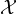 elemendiga hulgast 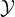.
Funktsiooni tähistatakse y = f(x), kus f on funktsioon ning x ∈ ja y ∈.
Samuti võib funktsiooni tähistada kui f : →. Hulki ja nimetatakse
vastavalt funktsiooni määramispiirkonnaks ja muutumispiirkonnaks.
Funktsiooni määramispiirkond on funktsiooni argumentide hulk ning
muutumispiirkond funktsiooni võimalike väärtusete hulk. Ühele väärtusele
määramispiirkonnas vastab ainult üks väärtus muutumispiirkonnas. Vastupidine ei
pea kehtima.
Muutujat, millele võime määramispiirkonnast vabalt väärtuseid valida, nimetatakse
sõltumatuks muutujaks. Muutujat, mille väärtuse määrab määramispiirkonnas
mingi funktsioon, nimetatakse sõltuvaks muutujaks.
Kui sõltumatu muutuja x igale väärtusele hulgast vastab kindel sõltuva muutuja y
väärtus hulgast , siis on hulgal määratud funktsioon y=f(x).
Funktsioonide esitusviisid
Funktsioone saab esitada valemi abil, mis näitab, kuidas saab funktsiooni argumendist
arvutada funktsiooni väärtuse. Näiteks funktsioon y = f(x) = x2 + x + 2 ütleb, et
argumendist x saame funktsiooni väärtuse, kui arvutame argumendi ruudu x2 ning
liidame juurde x ja 2. Samuti võib funktsiooni jaoks anda mitu valemit, mis
kirjeldavad erinevaid juhte. Näiteks kui me tahame kirjeldada funktsiooni, mis
väljastaks arvu 1, kui argument on mittenegatiivne ja arvu -1 muudel juhutudel, siis
kirjutaksime
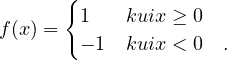
Teine võimalus on esitada funktsiooni arvupaaridena, kus paari esimene komponent
näitab argumenti ja teine komponent funktsiooni väärtust.
Näiteks kui meil on arvupaarid (1,2),(2,5),(3,6),(4,4)(5,5), siis need esitavad
funktsiooni f, mille määramispiirkond on = {1,2,3,4,5} ja muutumispiirkond on
= {2,4,5,6}. Seega näiteks f(2) = 5 ja f(5) = 5.
Kolmas võimalus on funktsioone esitada graafikuna. Kui meil on määramispiirkond
, siis funktsiooni graafik on arvupaaride hulk (x,f(x))x ∈.
Nullkohad
Argumendi väärtuseid, mille korral funktsiooni väärtus on 0, nimetatakse
funktsiooni nullkohtadeks. Nullkohtade hulka märgitakse 0 ning see kuulub
funktsiooni määramispiirkonda. Funktsiooni f nullkohad on võrrandi f(x) = 0
lahendid.
Positiivsus- ja negatiivsuspiirkonnad
Funktsiooni positiivsuspiirkonnaks on funktsiooni argumendid (hulk +), mille
korral f(x) > 0 ning negatiivsuspiirkonnaks argumendid (hulk -), mille korral
f(x) < 0.
Kasvamis- ja kahanemispiirkonnad
Funktsiooni y = f(x) nimetatakse kasvavaks vahemikus (a;b), kui selles vahemikus
argumentide kasvamisel kasvavad ka funktsiooni väärtused, teisisõnu kui
x2 > x1,x1,x2 ∈, siis ka f(x2) > f(x1).
Funktsiooni y = f(x) nimetatakse kahanevaks vahemikus (a;b), kui selles
vahemikus argumentide kasvamisel funktsiooni väärtused kahanevad, teisisõnu kui
x2 > x1,x1,x2 ∈, siis ka f(x2) < f(x1).
Funktsioone, mis kasvavad terves määramispiirkonnaks nimetatakse kasvavateks
funktsioonideks ja funktsioone, mis kahanevad terves määramispiirkonnas,
nimetatakse kahanevateks funktsioonideks.
Ekstreemumid, maksimum ja miinimum
Funktsiooni argumendi väärtuseid, mille korral funktsioon omandab suurima või
vähima väärtuse ükskõik milliste argumentide korral, nimetatakse funktsiooni
ekstreemumkohtadeks.
Kui funktsiooni kõigi argumendi väärtuste x ∈ korral kehtib võrratus
f(x0) ≥ f(x) mingi argumendi x0 jaoks, siis ymax = f(x0) on funktsiooni
maksimum.
Kui funktsiooni kõigi argumendi väärtuste x ∈ korral kehtib võrratus
f(x0) ≤ f(x) mingi argumendi x0 jaoks, siis ymin = f(x0) on funktsiooni
miinimum.
Paaris- ja paaritud funktsioonid
Funktsiooni y = f(x) nimetatakse paarisfunktsiooniks, kui iga funktsiooni
argumendi x korral kehtib
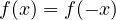
Näiteks y = x2 ja y = cos(x) on paarisfunktsioonid. Paarisfunktsioon on
sümmeetriline y-telje suhtes.
Funktsiooni y = f(x) nimetatakse paarituks funktsiooniks, kui iga funktsiooni
argumendi x korral kehtib f(-x) = -f(x).
Näiteks y = sin(x) on paaritu funktsioon. Paaritu funktsioon on sümmeetriline
koordinaatide alguspunkti (0;0) suhtes.
Pöördfunktsioon
Funktioonil y = f(x) eksisteerib pöördfunktsioon, kui igale funktsiooni
argumendile määramispiirkonnast vastab ainult üks väärtus muutumispiirkonnas
. Funktsiooni y = f(x) pöördfunktsiooni tähistatakse y = f-1(x) ja see leitakse
algsest funktsioonist x avaldamise abil.
Näiteks kui meil on funktsioon y = 5x + 5, siis pöördfunktsiooniks ongi x = 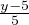.
Funktsiooni ja tema pöördfunktsiooni graafikud on sümmeetrilised sirge y = x
suhtes.
Võrdeline seos

Võrdeliseks seoseks nimetatakse muutujate võrdelisust. Muutujat y nimetatakse
võrdeliseks muutujaga x, kui nende muutujate kõikide väärtuste korral kehtib seos
y = a ⋅ x, kus a on nullist erinev konstant. Võrdeteguriks nimetatakse seoses
y = a ⋅ x asuvat konstanti a.
Pöördvõrdeline seos

Pöördvõrdelisus on muutujate x ja y vaheline seos, kus ühe muutuja väärtuse
kasvades väheneb teise muutuja väärtus proportsionaalselt. Seda saab kirjeldada
valemiga y = , kus a on konstant.
Lineaarne seos

Lineaarseks seoseks nimetatakse muutujate x ja y vahelis seost, kui y = a ⋅ x + b
ning kus a ja b on konstandid. Lineaarliikmeks nimetatakse seose y = a⋅x + b liiget
a ⋅ x ja vabaliikmeks liiget b. Lineaarse seose graafik läbib punkti (0;b).
Ruutfunktsioon

Valem y = ax2 + bx + c a≠0 esitab ruutfunktsiooni. Ruutfunktsiooni graafikuks on
parabool. Ruutfunktsioonil leidub lahend, kui leiduvad nullkohad ehk siis kui
ruutfunktsiooni graafik lõikab x-telge. Parabooli haripunkti x-koordinaat leitakse
valemiga
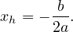
Graafikul kujutatud ruutfunktsiooni y = x2 - 1 korral asub haripunkt punktis (0;-1)
.
Liitfunktsioonid ja nende esitamine
Kui meil on funktsioonid y = f(u) ja u = g(x), siis funktsiooni y = f[g(x)]
nimetakse liitfunktsiooniks ehk funktsioonide f ja g kompositsiooniks.
Ükskõik millisest kahest funktsioonist f ja g on võimalik moodustada liitfunktsioon
y = g[f(x)], kui funktsiooni f muutumispiirkond ühtib funktsiooni g
määramispiirkonnaga. Viimane on ka tõsi enamiku elementaarfunktsioonide puhul,
kus nii määramis- ning muutumispiirkondadeks on tihti reaalarvude hulk
R.
Jada definitsioon ja üldmõisted
Arvjada all mõtleme lõpmatut järjestatud arvuhulka. Jada liikmed tähistatakse
indeksiga alates 1-st ning see näitab, mitmenda jada elemendiga on tegemist, kus
n-indat liiget nimetatakse üldliikmeks.
Näiteks jada (an):
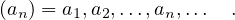
Jada üldliikme abil saame konstrueerida kõik jada elemendid. Näiteks kui üldliige
on
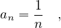
siis saame jada kus,
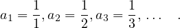
Jada (an) n esimese liikme summaks nimetatakse jada
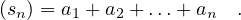
Tõkestatus ja hääbuvus
Jada on tõkestamatu, kui selle jada elementide absoluutväärtuste jadas leidub
kuitahes suuri arve. Teisisõnu, iga positiivse arvu N korral leidub n, kus N < |an|.
Näiteks jada 1,2,4,n2,… on tõkestamatu ning on tõkestamatult kasvav, sest jada
liikmed n suurenedes lähenevad lõpmatusele. Jada 100,99,98,100 - n… on aga
tõkestamatult kahanev, kuna läheneb negatiivsele lõpmatusele.
Jada (an) nimetatakse tõkestatuks, kui leiduvad kaks arvu a ja b, kus a ≤ b, nii et
kõik jada elemendid asuvad arvude a ja b vahel. Teisisõnu iga i = 1,2,3,4,…,n,…
korral kehtib a ≤ ai ≤ b.
Jada (an) nimetatakse hääbuvaks, kui selle jada liikmete väärtused hakkavad
lähenema nullile. Iga positiivse kuid kuitahes väikese arvu ε > 0 jaoks leidub selline
arv N, et kehtib |an| < ε, kui n > N.
Näiteks jada
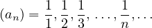
on hääbuv jada.
Aritmeetiline jada
Jada, mille kahe järjestikuse liikme vahe on konstantne, nimetatakse aritmeetiliseks
jadaks, st leidub jada vahe d = a2 - a1 = a3 - a2 = … . Kui d>0, on aritmeetiline
jada kasvav ja kui d<0, siis kahanev.
Aritmeetilise jada üldliige on
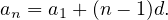
Üldliikme abil saab leida jada kõik liikmed.
Aritmeetilise jada n järjestikuse liikme summa üldliige (sn) on
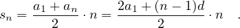
Geomeetriline jada
Jada, mille kahe järjestikuse liikme jagatis on konstantne, nimetatakse geomeetriliseks
jadaks, st leidub jagatis q = 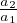 = 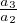 = … .
Geomeetrilise jada üldliige on an = a1qn-1, kus q on kahe järjestikuse liikme
konstantne jagatis. Kui q>0, siis jada liikmed on ühemärgilised ja kui q<0, siis
erimärgilised.
Geomeetrilise jada summa üldliige (sn) on
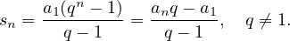
Kui -1 < q < 1, siis on jada lõpmatult kahanev geomeetriline jada. Sellise jada
summa
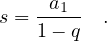
Jada piirväärtus
Arvu A nimetatakse jada (an) piirväärtuseks, kui selle jada liikmed erinevad arvust
A kuitahes vähe alates mingist järjekorranumbrist m. Teisisõnu, iga positiivse arvu
ε > 0 korral leidub arv selline m, et
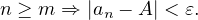
Seda, et jada (an) piirväärtus on A, märgitakse
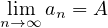
või lihtsalt liman = A või an → A.
Jada, millel eksisteerib piirväärtus, nimetatakse koonduvaks ja jada millel ei leidu
piirväärtust nimetatakse hajuvaks.
Piirväärtuse omadused
Piirväärtuse omadused:
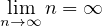
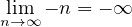
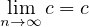
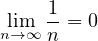
Kui leiduvad lõplikud piirväärtused limn→∞an = A ja limn→∞bn = B, siis kehtivad
ka järnevad omadused:
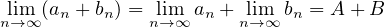
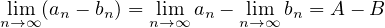
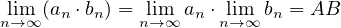
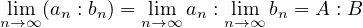
, kui B≠0.